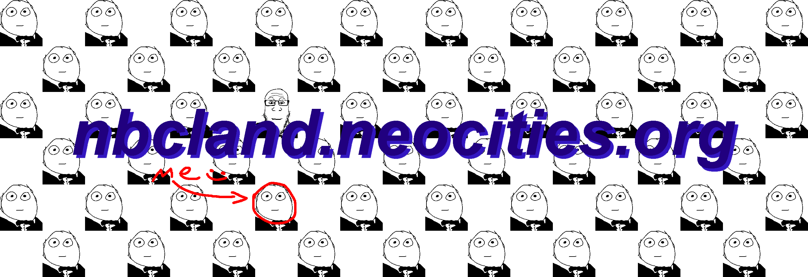
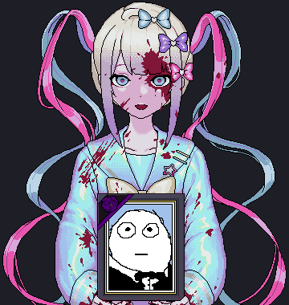

trivia
warning: sad
- My favourite anime currently is Jujutsu Kaisen, however Neon Genesis Evangelion was once my favourite. I wrote some awful fanfiction for it that has since been wiped off the internet.
- I started playing Minecraft in August of 2012, thanks to my dad not caring about early childhood internet exposure.
- I know more than I should about geopolitics, and I'm pretty sure that's cooked me for life.
- My hobbies consist of joking about poop and crying myself to sleep.
- My top favourite artist is Pink Floyd, followed closely by Kanye West, Tyler the Creator, Laufey, and Michael Jackson. Here's my unused RYM page.
- I once used yummers as a word in an official English exam. 2024 was a nice year.
- I got Raiden Shogun in Genshin Impact because someone loved me to the point of spending $160 on me. Thankfully I didn't fail the 50/50.
- My favourite US President is Richard Nixon, despite the fact that I'm not even American, and thus shouldn't care about their presidents.
- I like soyjaks.

That's me in the photo. Not even kidding.
about me
Here's some incredibly boring information about my life.
If you hadn't already gathered, I go by NBC online. I'm a student from New Zealand, currently hoping to study Computer Science as my major, despite the fact I'm awful at maths.
I enjoy wasting my time and money on electronics and collectibles (not funko pops), mainly expanding a burgeoning record collection.
I have a keen interest in the old internet, even then I think it's more overhyped than anything. In terms of electronics, I prefer vintage, upwards of 20 years or older. I got lucky and discovered my family's old stereo system in my houses cellar, so I currently use that and its awful speakers to listen to records, along with the occasional cassette.
I also like to repair phones and rearrange the guts of my various computers strewn about from time to time. My fixed phone roster is currently:
- an iPhone 3GS with a dead battery
- an iPhone 6s with a severely degraded battery + broken screen
- an iPhone 4 with yet another severely degraded battery
I should probably get around to reselling these at some point.
I originally made this website back in January 2024, with my limited knowledge of HTML/CSS. I coded the entire website using only tables. Obviously, if I were to do that now that would be incredibly embarrassing, so this revamp is mainly a showcase of my own personal growth when it comes to web design.
I've also suffered an ankle injury as of April 16th so I have a lot of free time on my hands.
If you're curious about my more specific interests, check out the Media page.

2024-2026. Proudly made on Microsoft Windows™.
This website was built and tested with a Blink-based browser. Firefox users may have a slightly different user experience.
Not associated with NBC or ComCast. Any similarity or reference to corporations, living or dead is purely coincidental.
This site is built on and only meant to be viewed on a desktop.